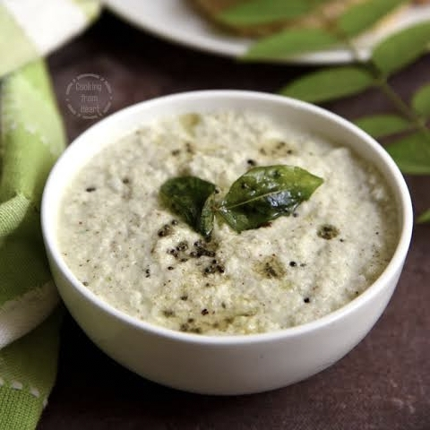

Ingredients:
- 1 cup grated coconut
- 2 tbsp roasted chana dal (Bengal gram)
- 1 green chili (adjust as per taste)
- ½ inch ginger
- 2 tbsp curd (optional, for extra creaminess)
- Salt to taste
- Water as needed
For tempering (optional but enhances flavor)
- 1 tsp mustard seeds
- 1 tsp urad dal
- dried red chili
- A few curry leaves
- 1 tsp oil

Instructions:
- 1. Blend grated coconut, roasted chana dal, green chili, ginger, salt, and curd (if using) with some water into a smooth paste.
- Adjust consistency by adding more water if needed. Transfer to a bowl.
- Prepare tempering: Heat oil in a small pan, add mustard seeds, urad dal, dried red chili, and curry leaves. Let them splutter.
- Pour tempering over the chutney and mix well.
- Serve with idli, dosa, or vada. Enjoy!